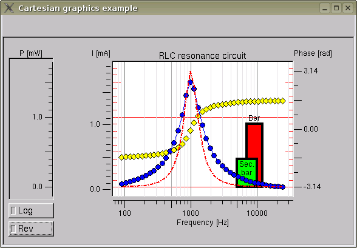

Cartesian graphics library
v.1.0, written by Roman Kantor
The purpose Cartesian library, based on FLTK graphical toolkit, is to
display various plots within real X and Y coordinates. The main
usage is visualization of scientific data but the library is extensible
and user can easily define his/her objects and define their look. The
attention was paid to plotting of coordinate axes and generation of
tics. Automatic modes can generate tics with proper "density" so that
when the drawing is rescaled, the number of tics can
automatically
change to keep drawings without overlapping labels. Each drawing
can have any number of vertical and/or horizontal axes with custom
position relative to the plotting area (left, right, top or
bottom) so that various objects (graphs) can be plotted
relative to different coordinates within the same area. The "test"
program (see example.cpp and its screenshot below) is such an example,
it has three vertical (Y) axes representing three different quantities.
If objects are added to the canvas dynamically, the canvas tries to
perform
incremental plotting (if possible) to speed-up the drawing and limit
CPU usage. The Use of
Fl_Double_Window (or Fl_Overlay_Window) as a parent window is
recommended to take full
advantage of the incremental plotting. It also avoids
"flickering" for very complex graphics with thousands of objects.

The library contains three class types:
- Ca_Canvas
- defines the area containing the drawings
- Ca_X_Axis,
Ca_Y_Axis - plot coordinate axes, these widgets are placed
around Ca_Canvas
- Ca_Object_ - all
drawing objects (like curves, points etc) are subclasses of that class.
The objects are placed on the canvas by constructing particular object.
The core library contains basic shapes: (poly)lines, points , bars etc.
Other objects can be easily defined by the user.
1. Class description
Ca_Canvas
All drawing objects (like curves) are plotted within this widget.
Because Ca_Canvas is public sub-class of Fl_Box, user can define the
look of plotting area using standard methods of that widget: color(..)
to describe the background, box(...) to define surrounding frame,
label(...) to define the caption of the drawing etc. It can also
show the coordinate grid or internal tics (ala gnuplot). Apart
from standard widget methods it has following public functions:
static
void Ca_Canvas::current(Ca_Canvas * c)
static Ca_Canvas* Ca_Canvas::current()
Sets or gets the current active canvas. Because the application
can contain a number of different figures, user can control to which
canvas newly constructed objects will be added. Also all new
constructed axes are also added to currently active canvas (see below
for axis classless).
void
Ca_Canvas::current_x(Ca_Axis_ * axis)
void Ca_Canvas::current_y(Ca_Axis_ *
axis)
Ca_Axis_* Ca_Canvas::current_x()
Ca_Axis_* Ca_Canvas::current_y()
These function define the active co-ordination system for newly
constructed objects. Because each canvas can have more vertical
or
horizontal axes, the user should specify which one should be used as a
coordinate for new
objects. If you have only single horizontal or vertical axis, you do
not
need to use these as they become active after their construction. If
you construct more axes of the same type (X or Y), the first one is
active if not explicitly set by current_*() functions. Note that these
function do not set the canvas active itself so use Ca_Canvas::current(...) function to
do that.
void
Ca_Canvas::clear()
The method destroys all plotting objects and redraws the
canvas.
int
Ca_Canvas::border()
void Ca_Canvas::border(int border)
Get and set the border size around the graphics in addition to natural
border of particular box type of the canvas. The min_pos() and
max_pos() values of axes (see below Ca_Axis_ class description) are set
with respect to that border.
void Ca_Canvas::clip_border(int dx =
0, int dy = 0, int dw = 0, int dh = 0)
void Ca_Canvas::clip_border(int * dx,
int * dy, int * dw, int * dh)
clip_border() functions limit ate actual drawing area within the
canvas. The actual drawing area is reduced by clipping with dx, dy, dw
and dh values (the meaning is similar to dx, dy, dw, dh of widget
frame). This method is useful ie if you plot internal tics (like in
gnuplot graphs) and you do not overlap these with the plotted objects.
Ca_Canvas::Ca_Canvas(int
x, int y, int w, int h, const char *label=0)
A Fl_Widget compatible constructor. Canvas (and also axis classes
below) can be used in fluid. Include Cartesian.H in your fluid file,
add
a "box" to your gui and explicitly specify Ca_Canvas as the class in
the appropriate field in the form.
Ca_Canvas::~Ca_Canvas()
The destructor also removes (destroys) all objects and detaches the
axes from the
canvas (without destruction).
Ca_X_Axis, Ca_Y_Axis
Ca_X_Axis and Ca_Y_Axis classes are used to
construct widgets for horizontal and vertical coordinates. As
said above, there can be a number of axes of the same type. If there
ate two Y (X) axes you usually place them just next to the canvas on
right and left (bottom and top) side. If there are more (three in the
example), you can place them little bit further from the canvas (but
still parallel to the rest ones). Both classes are derived from Ca_Axis_ base class and have the
same methods so below we describe the Ca_Axis_class:
the methods have the same meaning, only the apereance differs with
respect to their function. Because Ca_Axis_
is derived from Fl_Box, you
can use all its methods to define the axis apereance in a similar way
as in Ca_Canvas case.
void
Ca_Axis_::scale(int s)
Sets the character of the axis. Use enumerations CA_LOG (for
logarithmic) or CA_LIN (for standard linear) character. If you
"OR" (add) the value with CA_REV enumeration, the direction will
be reversed. You can change the type "on the fly"
virtual
void Ca_Axis_::current()
This function sets the axis as current, it is equivalent to
Ca_Canvas::current_x(this) or Ca_Canvas::current_y(this) depending what
type is the axis. All new objects will be placed relative to that
co-ordinate.
virtual
double Ca_Axis_::position(double value)
This method returns the real x or y position corresponding to the given
value. It is should be used inside draw() method of Ca_Object_ derived
class (see below) for its drawing.
virtual
double Ca_Axis_::value(double position)
Gives the value for given position, it
can be used i.e. for cursor implementation (see below in section
"Miscellaneous")
Ca_Canvas
* Ca_Axis_::canvas()
Gives information about the canvas to which the axis belongs
to.
int
Ca_Axis_::border()
void Ca_Axis_::border(int border)
Gets or sets the gap between the tics and the widget edge - only
aesthetical purpose.
double
Ca_Axis_::minimum()
double Ca_Axis_::maximum()
void Ca_Axis_::minimum(double x)
void Ca_Axis_::maximum(double x);
Sets or gets the range for the axis.
void
Ca_Axis_::rescale(int when, double value);
The method rescales the axis if supplied value exceeds min() or
max(). The
idea is that you call this function each time you add an object (with
given coordinates) to the canvas. The condition when (enumerations CA_WHEN_MIN, CA_WHEN_MAX) can
be combined: rescale(CA_WHEN_MIN|CA_WHEN_MAX, value) rescales the
axis if the value exceeds either smaller or bigger than the recent
range to include the object.
void Ca_Axis_::rescale_move(int when, double x)
This method allows to implement something like "moving" or "scrolling"
window without changing axis scale so that max()-min() (for logarithmic
axes
min()/max()) remains constant. So if the value is outside recent
axis interval and you perform rescale(CA_WHEN_MIN|CA_WHEN_MAX,
value), the new range will shift the range to include new value but
some older one could be shifted outside the displayed range.
Control of the apereance of axis ticks
There ate three types of tics with different apereance:
- minor tics
- major tics
- label tics
Minor tics are the ordinary short tics close to each other. Major tics
are somewhat longer and appear with certain periodicity and represent
some round values among minor tics. Label tics are those of major ones
which have printed a value next to them. Following methods define the
tick values, separation and values printed next to label tics:
void
Ca_Axis_::tick_interval(double interval)
double
Ca_Axis::tick_interval()
These functions define the "step value" for the ticks. The actual
behavior depends on
particular value of "interval"
- 1 <= interval <10 :
if the "interval" is within this range it defines the difference
between the tics except the order. The order is automatically
calculated from the axis size and its range (minimum() and maximum()
values) so that the separation between them is reasonable (see
separation() method). This means that say if you define
tick_interval(2), your minimum() is 0.875 and maximum
1.176, you will get tics positioned on values 0.88,
0.90, 0.92, 0.94, ... 1.16 .
- interval <0 (negative)
: (this applies only for linear axes) the interval is set
including the order, so -0.002 will give you tics of values of 0.876,
0.878, 0.880 ....1.176). Note that in this case the interval should be
carefully chosen by the user otherwise there may be too many or too few
tics displayed on the axis.
- interval == 0 (default
value): This is the most convenient case for which engine tries
to find the best interval values among 1,2,5. The density
of ticks kept more-less constant even if user rescales the axis.
void
Ca_Axis_::tick_separation(int separation)
int Ca_Axis_::tick_separation()
This methods sets (gets) the "optimal" screen distance between ticks in
pixels. If the interval in above methods is set bigger or equal zero
(automatic generation), the actual difference between ticks values is
then calculated to "round ones" with the actual separation as close as
possible to this optimal value (default value is 18).
void
major_step(int step)
int major_step()
The number of minor tick between two successive major ones. If
zero then for default tick_interval (0) the numbers are automatically
calculated as:
- 5 if "tick interval" was "calculated" as 1 (for linear axes the
major tics are at values "0", "5", "10", "15"...,
minor at values "1", "2", "3", "4", "6", "7", "8", "9", "11", ...)
- 5 if "tick interval" was calculated as 2 (for linear axes the
major ticks are at values "0", "10", "20", ..., minor at values "2",
"4", "6", "8", "12"...)
- 2 if "tick interval" was calculated as 5 (major tics at values
"0",
"10", "20", ..., minor at values "5", "15", "25"...)
For logarithmic axes the step for major ticks is similar but slightly
more sophisticated as the number of the minor ticks between major ones
might vary (ie there are only three minor ticks (step four) between
major values 1 and 5 but four between 5 and 10 (step 5).
void
Ca_Axis_::label_step(int step)
int Ca_Axis_::label_step()
These methods work similar as above ones with exception that it
describe the number of minor tics between the ones with the
labels. The value should be a multiplication of major_step()
value.
void
Ca_Axis_::tick_length(int length)
int Ca_Axis_::tick_length()
Describes length of the minor tics. If 0 (default), the
label font size for the ticks is used. Major ticks and ticks with
labels are twice as long
as the minor ones.
void
Ca_Axis_::label_format(const char *format)
const Ca_Axis_::char* label_format()
Specifies and gets prinf()-like format for labels next to ticks.
If the format
is equal to 0 (default value), the format is automatically calculated
to
match output to something like "%.nf" where n corresponds to calculated
order of tick step.
void
Ca_Axis_::label_font(Fl_Font face)
Fl_Font Ca_Axis_::label_font()
Specifies the font used for labels of the ticks.
void
Ca_Axis_::label_size(int size)
int Ca_Axis_::label_size()
Specifies the size of the tick labels.
void
Ca_Axis_::axis_color(Fl_Color _axis_color)
Fl_Color Ca_Axis_::axis_color()
Specifies color for tics and labels.
void
Ca_Axis_::minor_grid_color(Fl_Color color)
void
Ca_Axis_::major_grid_color(Fl_Color color)
void
Ca_Axis_::label_grid_color(Fl_Color color)
void Ca_Axis_::minor_grid_style(int style, int width=0, char * dashes=0)
void Ca_Axis_::major_grid_style(int
style, int width=0, char * dashes=0)
void Ca_Axis_::label_grid_style(int
style, int width=0, char * dashes=0)
Fl_Color
Ca_Axis_::minor_grid_color()
Fl_Color Ca_Axis_::major_grid_color()
Fl_Color Ca_Axis_::label_grid_color()
void
Ca_Axis_::minor_grid_style(int
*style, int *width=0, char ** dashes=0)
void Ca_Axis_::major_grid_style(int
*style, int *width=0, char ** dashes=0)
void Ca_Axis_::label_grid_style(int
*style, int *width=0, char ** dashes=0)
All above functions define or obtain information about the
apereance of the grid within the the canvas. For last three
functions you
can pass null pointer (0) if you do not require particular information
about the style value.
void
Ca_Axis_::grid_visible(int visible)
int Ca_Axis_::grid_visible()
These functions define which grid lines (corresponding to minor, major
or label ticks for the axis) have to be plotted in the
canvas area. They can have a form of full lines or internal tics "a la
Gnuplot" on left (bottom) , right ( top) side or on both sides. You
should use
combination (use operator "|" or "+") of following
enumerations:
CA_MINOR_GRID
// grid lines at positions of all ticks are plotted
CA_LEFT_MINOR_TICK // internal minor left
-side ticks (within the canvas) are plotted (for y-type
axes)
CA_BOTTOM_MINOR_TICK
// internal bottom minor ticks are plotted (for x-type axes)
CA_RIGHT_MINOR_TICK
// internal minor right-side ticks are plotted (for
y-type axes)
CA_TOP_MINOR_TICK // internal top minor
ticks are plotted (for x-type axes)
CA_MINOR_TICK
(==CA_LEFT_MINOR_TICK | CA_RIGHT_MINOR_TICK)
CA_MAJOR_GRID // grid lines at positions of
major ticks are plotted
CA_LEFT_MAJOR_TICK // internal major left
-side ticks are plotted (for y-type axes)
CA_BOTTOM_MAJOR_TICK // internal bottom major ticks
are plotted (for x-type axes)
CA_RIGHT_MAJOR_TICK
// internal major right-side ticks are
plotted (for y-type axes)
CA_TOP_MAJOR_TICK // internal top major ticks
are plotted (for x-type axes)
CA_MAJOR_TICK
(==CA_LEFT_MAJOR_TICK | CA_RIGHT_MAJOR_TICK)
CA_LABEL_GRID //
grid lines at positions of label ticks are plotted
CA_LEFT_LABEL_TICK //
internal label left -side ticks are plotted (for y-type
axes)
CA_BOTTOM_LABEL_TICK // internal bottom label
ticks are plotted (for x-type axes)
CA_RIGHT_LABEL_TICK
// internal right-side label ticks are
plotted (for y-type axes)
CA_TOP_LABEL_TICK
// internal top label ticks are plotted (for x-type axes)
CA_LABEL_TICK
(==CA_LEFT_LABEL_TICK | CA_RIGHT_LABEL_TICK)
CA_FRONT
// plots the grid over the objects
As the labeled ticks are also major ones, setting i.e.
grid_visible(CA_MAJOR_GRID) will plot no minor-ticks grid, but major
and labeled ones. When the value is
combined with CA_ALWAYS_VISIBLE, the grid is plotted even if the axis
is not visible itself. Normally the grid is plotted at the
background with objects in front of them. If you want the grid to
"cover" the plotting, combine the supplied value with
enumeration CA_FRONT.
void
Ca_Axis_::axis_align(unsigned char align)
unsigned Ca_Axis_::char axis_align()
This parameter defines the axis apereance to define the
"orientation of ticks" for the axis surrounding canvas. Use
enumerations CA_LEFT (default)
or CA_RIGHT for Ca_Y_Axis
(y-type, vertical); CA_TOP
or CA_BOTTOM (default) for
CA_X_Axis (x-type, horizontal) .
If you want the base axis line to be drawn as well (similar as
x-axis in the example), combine the
parameter with CA_LINE
enumeration
Ca_X_Axis::Ca_X_Axis(int x, int y, int w, int h, const
char * label=0);
Ca_Y_Axis::Ca_Y_Axis(int x, int y, int w, int h, const
char * label=0);
These are standard constructors for both axis types. If you
want to arrange the axes within fluid, use Fl_Box for the widget and
explicitly specify the class (Ca_X_Axis, Ca_Y_Axis) in appropriate
field.
Ca_X_Axis::~Ca_X_Axis()
Ca_Y_Axis:: ~Ca_Y_Axis()
The destructors destroy not only the widget but also all objects
related to the axis. The destructors of axes is also called when
canvas is destroyed.
Class Ca_Object_
This is a base class of all drawings. Every object drawn within the
canvas should be a subclass of this class with own draw() method.
Within this drawing method all drawing should be performed,
x_axis_->position(x) and y_axis_->position(y) functions should be
used to retrieve the x and y screen coordinates for x and y real
coordinates. Although only points, lines and bars are included in the
library, any 2D drawing can be placed within the canvas as long
as you define its drawing function.
Note: If you add an object to the canvas, the object is the last object
and is atop of the rest. Only incremental redraw is done (which
adds the drawing) if the canvas does not need a foll redraw (like when
rescaling is performed etc.)
Protected members:
Ca_Canvas *canvas_
- the canvas to which it belongs to (the active
canvas when the object was created)
Ca_Object_(Ca_Canvas *
canvas=0)
If Ca_Canvas is 0, the object is assigned to
current canvas
Public members:
Ca_Axis_ *x_axis_
Ca_Axis_ *y_axis;
- co-ordination axes for the object (active axes
when the object was created
virtual void draw()
- here is your drawing code for your objects
virtual ~Ca_Object_();
Override the destructor when your object is
somplicated and you
have need to make a sophisticated destruction.
The library contains some real objects:
Class Ca_Point
Simple points with different shapes. For the simplicity of the access
all members are public.
If you make some changes tor these, redraw() the canvas after
making the changes..
double x
double y
Real coordinates
Fl_Color color
Fl_Color
border_color
int border_width
unsigned char style
int size
The pinternal color, the color and width of
the border (if border is plotted), the shape and size of the plotted
pont. The shape can
have one of the values:
CA_SIMPLE, CA_ROUND
CA_SQUARE
CA_UP_TRIANGLE
CA_DOWN_TRIANGLE
CA_DIAMOND
CA_NO_POINT
When CA_BORDER
is added (like uding | operator) to the the border shape, a surriunding
line
of border_color and boder_width is also plotted.
fl_point(..) id used to draw CA_SIMPLE point
(a single pixel), other have size of "size" and the shapes correspond
to the name
Ca_Point(double _x,
double _y, Fl_Color
color=FL_BLACK, int style=CA_SIMPLE, int size=DEFAULT_POINT_SIZE,
Fl_Color border_color=FL_BLACK, int border_width=0);
The constructor also sets all parameters influencing
the appereance.
class Ca_LinePoint:Ca_Point
This object can be used for plotting of "Ca_Point" points connected
with lines. The color of the line is the same as the interior of
the point.
Public members:
Ca_LinePoint
*previous
Each lCa_Line poinr represents a point and a line between this
point and a previous one within a curve. If previous is zero, it is a
first point and no line is connecting plotted.
int line_width
Width of the connecting line
Ca_LinePoint(Ca_LinePoint *_previous, double _x,
double _y, int line_width, Fl_Color color=FL_BLACK, int
style=CA_SIMPLE, int size=DEFAULT_POINT_SIZE, Fl_Color
border_color=FL_BLACK, int border_width=0);
The constructor defines all parameters influencing the
appereance.
Ca_LinePoint(Ca_LinePoint *
previous, double _x,
double _y)
This form of the constructor defines only position and previous
object within the curve, all other parameters are inherited from
"previous".
class Ca_PolyLine
This object is similar to the previous but also the styles (like
dashes) for connecting lines can be defined.
Members:
int line_style;
Defines the stule of the connecing line
Ca_PolyLine * next;
Ca_PolyLine(Ca_PolyLine *_previous, double _x,
double _y,int line_style, int line_width=0, Fl_Color color=FL_BLACK,
int style=CA_SIMPLE, int size=DEFAULT_POINT_SIZE, Fl_Color
border_color=FL_BLACK, int border_width=0);
Constructor defining fuly the appereance
Ca_PolyLine(Ca_PolyLine *_previous, double _x,
double _y);
Constructor defining only previous point and the coordinates,
the appereance is ingerited from previous.
Class Ca_Line:Ca_Point
Although the appereance is similar to Ca_PolyLine, there are a few
differences:
1. It is a single object
2. The coordination values are not stored in the
object - only ponters to the x (data) and y (data_2) data arrays.
If dada_2==0, both sets should be stored in *data in
order x1, y1, x2, y2.....xn, yn.
Public members:
int line_style;
int line_width;
int n;
// number of points - dize of data array
double * data;
double * data_2;
Ca_Line(int _n,
double *_data, double *_data_2, int
_line_style, int _line_width=0, Fl_Color color=FL_BLACK, int
style=CA_SIMPLE, int size=DEFAULT_POINT_SIZE, Fl_Color
border_color=FL_BLACK, int border_width=0);
Ca_Line(int _n,
double *_data, int _line_style, int
_line_width=0, Fl_Color _color=FL_BLACK, int style=CA_SIMPLE, int
size=DEFAULT_POINT_SIZE, Fl_Color border_color=FL_BLACK, int
border_width=0);
Class Ca_Text: public Ca_Object
This object plots formated text inside real coordinates x1, x2, y1, y2.
Public members:
double x1,x2,y1,y2;
char * label;
uchar align;
Fl_Color
label_color;
Fl_Font label_font;
int label_size;
Ca_Text(double _x1,
double _x2, double _y1, double
_y2, char *_label, uchar _align=FL_ALIGN_CENTER, Fl_Font
_label_font=FL_HELVETICA, int _label_size=CA_DEFAULT_LABEL_SIZE,
Fl_Color _label_color=FL_BLACK);
Ca_Text(double x, double y, char *_label=0, uchar
_align=FL_ALIGN_CENTER, Fl_Font _label_font=FL_HELVETICA, int
_label_size=CA_DEFAULT_LABEL_SIZE, Fl_Color _label_color=FL_BLACK);
Class Ca_Bar: public Ca_Text
A bar with optional border (if border_width >=0) and label which can
be formatted and aligned similar to the widget labels.
Public members:
Fl_Color color;
Fl_Color
border_color;
int border_width;
Ca_Bar(double _x1,
double _x2, double _y1, double
_y2, Fl_Color _color=FL_RED, Fl_Color _border_color=FL_BLACK, int
_border_width=0, char *_label=0, uchar _align=FL_ALIGN_CENTER,
Fl_Font _label_font=FL_HELVETICA, int
_label_size=CA_DEFAULT_LABEL_SIZE, Fl_Color _label_color=FL_BLACK);
2. Example program
The example program generates gemerates and plots the points in 0.1 s
intervals. You can see how axis are rescaled during the generation.
The You can change the mode "power" axis to see how
possible
axis types look like.
The easies way to compile the example program is to use fltk-config:
path/to/fltk-config --compile path/to/cartestan/test/example.cpp
and execute resulting binary.
You can also use the Makefike
within /gnu subdirectory but you need to redefine FL and libDirs
(if required) so that the compliler can find fltk include files
and fltk library.
Under windows you can also use a VC project as included in
/visualc subdirectory.
3. FAQ
Q1: What is the difference
between Ca_LinePoint and Ca_PolyLine (or
Ca_Line)?
A: Ca_LinePoint Ca_PolyLine are multi-oblect creatures and can
be incrementaly construcred (i.e. during data acquisition).
Ca_LinePoint is faster because
it can perform incremental drawing (so it will use much less CPU
if you have many thousands points and you
are appending new ones to the structure because it does need not to
perform full canvas redraw, it only draws the new point).
Ca_PolyLine have additional features (like line_style) but when
a point is added to it, all the canvas is redrawn. It is not so
important for static
data but if you want to visualise real-time data asquisition it
might be better to use Ca_PolyLine or Ca_LinePoint which would consume
less CPU cycles. Ca_Line also have a traditional array-like data which
are not
copied, only the pointer to the data is stored.
Q2: What about cursors (like
Fl_Positioner)?
A: It can be easily implemented using an overlay window and plot
wire cursors over canvas. You have to overrire canvas handle()
method in which you can get
the position of the cursor for use in draw_overlay() (call
redraw_overlay() to update drawing) You
can also show the cursor coordinates (in say Fl_Value_Output) using
Ca_Axis_::value(position) where position is the screen-position of your
pointing cursor. With different user needs for the cursor control, it
will not be probably included in the lib and so the particular
implementation is left for the user.
Q3: Can I print the graphics?
A: Please use FL_Device patched FLTK (see baazaar) of use
fltk-1.2. Before printing you may want to rescale the graphiccs, change
the background or make other changes if you want to tune the output for
the print. After printing roll-back your changes to adjust the
appereance for the screen version.
Q3: Will you add other objects like
error bars etc?
A: No. The library is a framework and points with error bars can be
easily added by subclassing Ca_Object and overriding draw() method.
4. Enjoy!
Roman